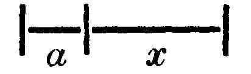

Kant: AA XVII, Reflexionen zur Metaphysik. , Seite 278 |
|||||||
Zeile:
|
Text:
|
|
|
||||
| 01 | |
||||||
| 02 | |
||||||
| 03 | |
||||||
3738. ζ. M 2'. E II 295. 500. |
|||||||
| 05 | Alle analytischen Urtheile lehren, was in den Begriffen, aber verworren | ||||||
| 06 | gedacht ist; die synthetische, was mit dem Begriffe soll verbunden | ||||||
| 07 | gedacht werden. In allen urtheilen ist der Begriff vom subjekt etwas (g a ), | ||||||
| 08 | das ich an dem Objekte x denke, und das Prädikat wird als ein Merkmal | ||||||
| 09 | von a in den synthetischen analytischen Urtheilen oder von x in den | ||||||
| 10 | synthetischen angesehen.  |
||||||
| 11 | alle analytischen Urtheile sind rational und umgekehrt. alle synthetische | ||||||
| 12 | Urtheile sind empirisch und umgekehrt. principia rationalia prima vel | ||||||
| 13 | materiae vel formae priora sunt iud principia elementaria; principia | ||||||
| 14 | synthetica, si forent simul rationalia, dicerentur axiomata; sed, cum | ||||||
| 15 | talia non dentur, analoga rationalium in mathesi ita dicuntur. In | ||||||
| 16 | philosophia non dantur principia synthetica nisi a posteriori, i.e. | ||||||
| 17 | empyrice, et principia analytica a priori, h.e. propositiones elementares, | ||||||
| 18 | utraque materialia. | ||||||
| 19 | Comparare possum notiones earum relationem cogitando vel | ||||||
| 20 | secundum regulam intellectus: empyrice (g et synthetice ), vel rationis: | ||||||
| 21 | rationaliter et analytice, vel secundum regulas analogi rationis, h.e. | ||||||
| [ Seite 277 ] [ Seite 279 ] [ Inhaltsverzeichnis ] |
|||||||
;){kind=link}